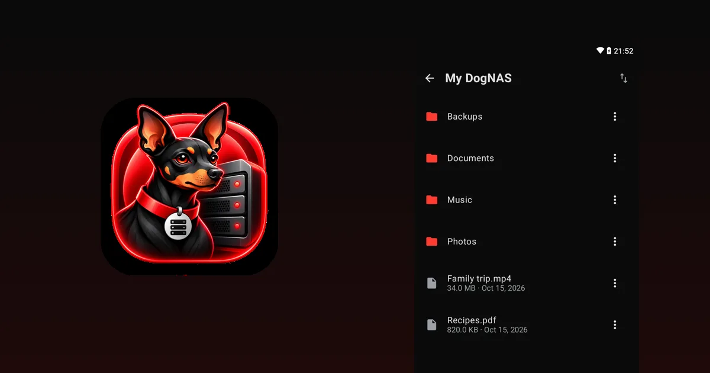
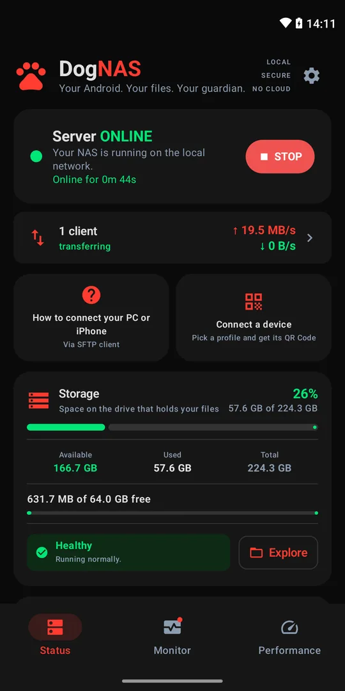

Sell, donate or reuse your old phone: how to decide

The old phone is in a drawer and you haven't decided what to do: sell it, donate it, recycle it or reuse it at home. Each path makes sense in a different situation. This guide helps you choose and shows how to protect your data in any of them.
The four options
- Sell. Makes sense if the device still has demand and is in good shape. Consider the time and effort of listing and negotiating, because the price is usually low for older models.
- Donate. A good way out if it works well and someone will make use of it, such as a relative, a school or a charity.
- Recycle. If it is broken or no longer useful, take it to an electronics collection point. Don't put it in the regular trash, because of the battery and the materials.
- Reuse at home. Makes sense if it turns on, joins Wi-Fi and you have a real need. One use that stays useful is turning it into your home file server.
How to decide
Ask yourself:
- Does it work well? If the battery, the screen or the Wi-Fi are bad, recycling or repairing may be better.
- Do I need something it can do? If you want to keep photos and documents at home without paying for cloud, it can be the server. See what to do with an old phone.
- Is selling worth the money and the effort? If the price is low, donating or reusing often pays off more.
Before you part with it: protect your data
If the phone is going to someone else, follow these steps:
- Back up what matters somewhere else and check that it is there.
- Sign out of your accounts, such as Google, and remove the device from your account.
- Take out the SIM and the memory card.
- Factory reset it in Android's settings.
Only hand the device over after that.
If you choose to reuse it as a file server
With DogNAS, an Android running 7.0 or newer becomes a file server on your home Wi-Fi. Install the app, choose where to keep files (internal storage, an SD card or a USB drive), tap Start and connect other devices with a QR Code and a PIN. The Free plan manages up to 64 GB, and Pro, a one-time purchase with no subscription, uses the whole storage.
First, remove your personal data from the device if it will only be a server, and keep an independent copy of what matters, since DogNAS does not back up on its own. A very old device may no longer get security updates: use it only on your home network, which is how DogNAS works.


Summary
If the phone doesn't work well, recycle it. If it works and you don't need it, donate or sell it after erasing your data. If it works and you need a place to keep the home's files, turn it into a file server.